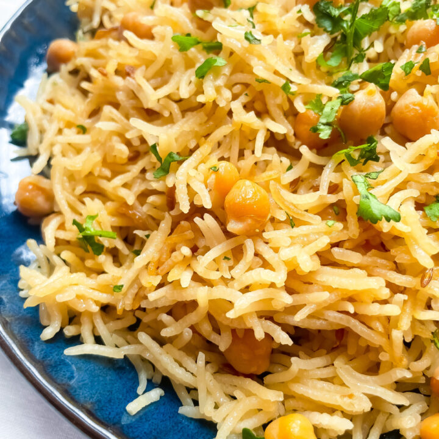

Chana Chawal

Description
Chana Chawal is a delicious dish based in the north western part of the Indian subcontinent. It is comprised of mainly rice and chickpeas, as per the name. Packed with protein, carbs, warmth, and delectably aromatic spices, chana chawal makes for a wonderful dinner with family and friends
Like any good Pakistani dish, we first begin with sauteeing onions until golden brown, giving the basmati rice it's brownish color. Adrak Lasan and mirchi enhance flavor, while the tomato simmers it down to an enticing stew the rice and chickpeas will be cooked in.
Ingredients
- chickpeas
- basmati rice
- onions
- tomato
- ginger
- garlic
- chillies
- cilantro
- red chilli flakes
- salt
- cumin powder
- garam masala
- chana masala
Steps
- Soak 1 1/2 cup of rice in water for half hour
- Chop onion
- Glaze pan with olive oil
- Add salt
- Sautee onion till golden brown
- Mince garlic and ginger
- Once onions are golden brown add minced garlic and ginger
- Add two chillies to the pan
- Add 1 teaspoon of red chilli flakes
- Once there is an aroma, dice the tomato and add it to the pan
- Let the tomato simmer till it is liquid
- Add chickpeas
- Add 2 teaspoons of cumin powder
- Add 1 teaspoon of garam masala
- Add 1/2 tablespoon of chana masala
- Cook until aromatic
- Add chopped cilantro
- Add two times the amount of rice for water to the pan
- Raise the heat and wait for it to boil
- Once boiling, add the soaked rice and wait for it to boil again
- Once boiling, set heat to low and cover the pan for 15 minutes
- Voila! Yummy rice!